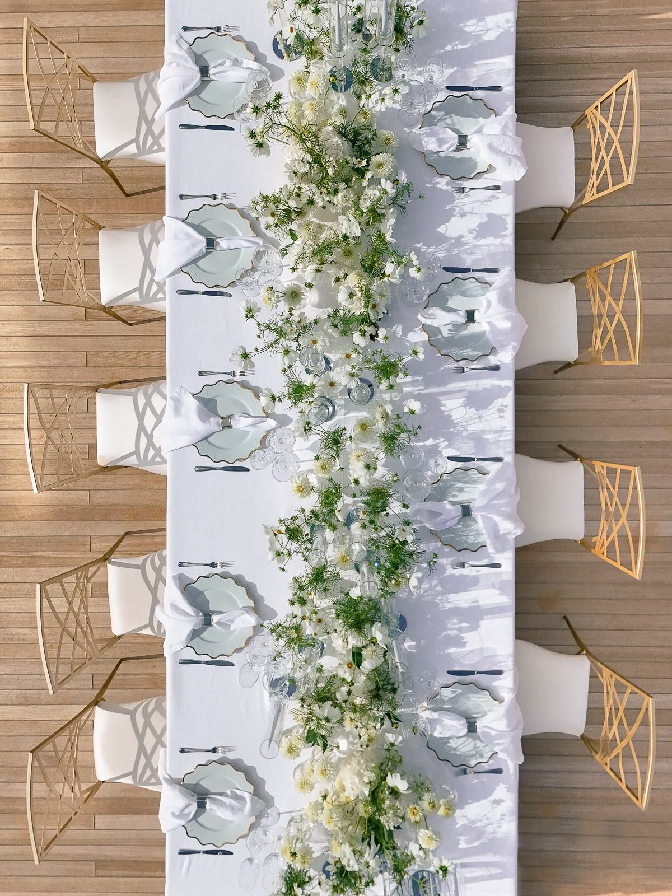
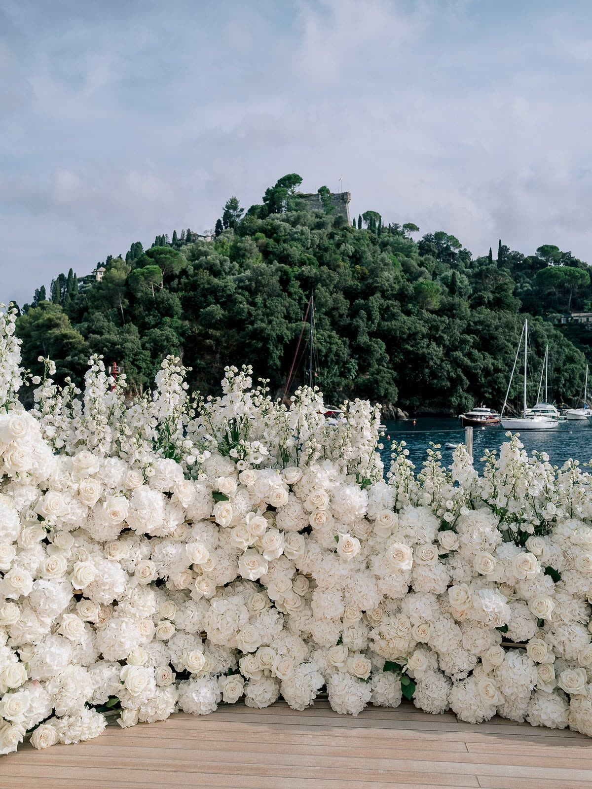
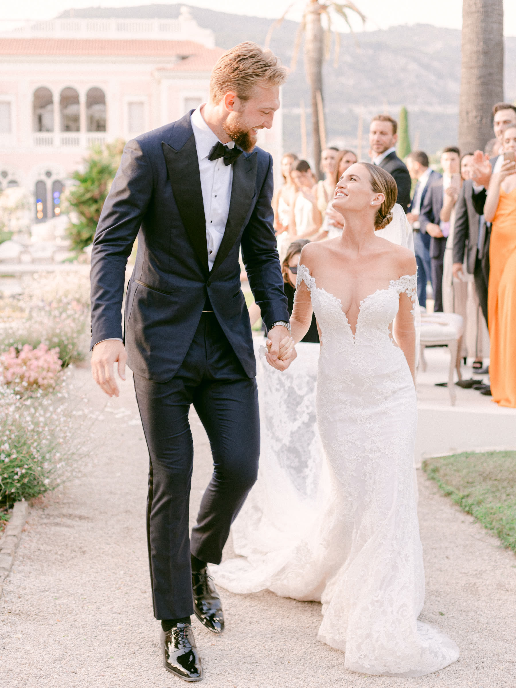
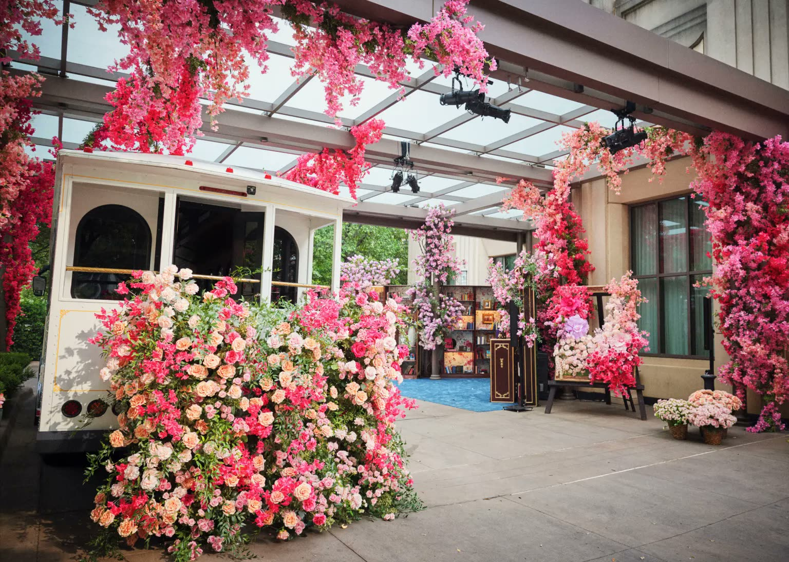
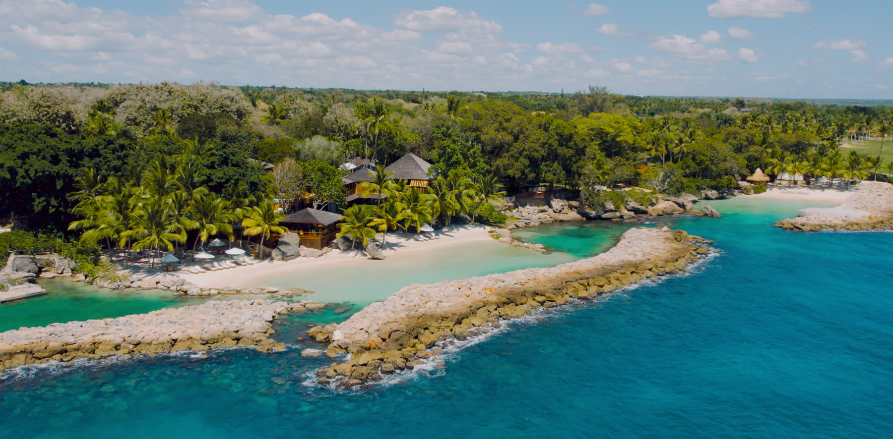

Wedding Films in the US
Luxury Wedding Filmmaker in the United States
Most of the couples we film are American, and they hire us for one of two reasons. Either they are marrying in Europe and want a studio that lives there ... or they are marrying at home in the United States and want a film that does not look like every other American wedding video.
We work in both directions. The studio travels to the United States for weddings and private celebrations, and we take American couples through European destination weddings from the first venue call to final delivery.
For American couples marrying in Europe
This is the majority of our work: a couple in New York, Los Angeles or Dallas, a villa on Lake Como or a château on the Riviera, and a wedding weekend that has to be coordinated across a seven-hour time difference. Being based in Europe means the venue visits, the vendor calls and the permits happen in local business hours rather than yours.
It also means your film is made by people who know the region. We are not flying in the night before to film a coastline we have never seen.
For weddings and private events in the United States
We travel to the United States for weddings, anniversaries, engagement parties and private celebrations. Recent work includes Russell and Nina Westbrook's anniversary film and an engagement party at the Ritz-Carlton Dallas.
The approach does not change with the passport. A cinema-trained crew, a director who has run large productions, and a film that is built like a short feature rather than assembled from ceremony coverage.
— Selected Work




— Questions
Frequently asked
Do you film weddings in the United States?
Yes. We travel to the US for weddings, anniversaries, engagement parties and private events ... recent work includes Russell and Nina Westbrook's anniversary film and an engagement party at the Ritz-Carlton Dallas. Travel is quoted openly as part of the collection.
Why do American couples choose Chromata Films?
It comes down to vision. Our founders bring a French sensibility to every film ... an eye for elegance and restraint, a taste for what's genuinely beautiful, that is rare to find in American wedding videography. We also keep a crew based in the United States, ready to shoot coast to coast, so you are not paying to fly a full team over from Europe. And because our director spent a decade in Hollywood visual effects ... Star Wars: The Last Jedi, The Great Gatsby, Beauty and the Beast, Avengers: Infinity War ... every frame is built with a blockbuster eye for light and composition. That combination is what gives our films the wow factor couples are hoping for on their wedding day.
How much does a luxury wedding film cost for US couples?
Collections start at 15,000 USD. For weddings in the United States, travel and accommodation for the crew are quoted as part of that number rather than added afterward as a surprise.
We are American but marrying in Europe. How does that work?
To be clear, we are the film team, not the wedding planner ... we don't handle venue bookings, vendor contracts or on-the-ground logistics. What we strongly recommend is working with a dedicated wedding planner: navigating venues, vendors, permits and timelines from another country is exactly what they do best, and it makes the whole weekend easier for everyone, including us. If you don't have one yet, just ask ... we've worked with planners across France, Italy and beyond, and are always happy to recommend a few based on your taste, budget and location.
How far in advance should we book?
The most requested European dates ... June through September on the Riviera and Lake Como ... are typically reserved a year or more ahead. That said, it is always worth asking; schedules change, and we would rather tell you we are free than have you assume we are not.
How long until we receive our film?
Films typically arrive four to eight weeks after the wedding, depending on the season's workload. Where a collection includes an Instagram reel cut, that usually comes together within a few days. It is always an estimate rather than a fixed date ... every wedding's schedule and workload are different, so we would rather be honest about the range than promise something we can't guarantee.
— Begin
Tell us about your day
Collections start at 15,000 USD. Send us the date, the place and a sentence about the celebration ... we will come back to you personally.
Check your date →